ResearchPublic

HYDRA//INDEX
An evidence-conscious compound atlas, source-linked studies, research discovery, chemical relationships, and a public Observatory. The current version is live on Railway.
Production source updated
An interconnected literary world / Est. in fragments, recovered in context
One way through the early website, the voices that gathered around it, the poetry still being written, and the language still becoming. Follow a curiosity—not a sitemap.
Original sources remain original. Reconstructed pages and living work stay clearly distinguished.
01 / The entrances
Four independent archives and experiences. Choose by what you want to do.
02 / The thread finder
Search the actual surviving text of 106 IDP poems right here. Then deliberately carry the same query into the forum or language lab if you choose.
A title, a feeling, half a line: start anywhere.
Forum and Observatory links open their own search interfaces. RhymeMosaic uses its own on-site search; no cross-site data is silently merged.
03 / Follow a feeling
Title-led editorial reading trails through surviving original poems. These are suggested associations, not documented composition sequences or canonical revisions.
READING PATH 01 / 04
An interpretive route through three early poems.
04 / The unexpected
Sometimes the right poem is the one you never intended to find.
A random door into the recovered poetry.
Your local trail
Recently opened original poems, saved on this browser only—not in an account.
Your trail begins when you open an original poem.
05 / Follow the evidence
Every historical date below describes surviving evidence, not a guessed date of composition.
Embedded Word metadata in a recovered working document reports a September 13 creation/save date. This is a provenance clue, not proof that its passages were composed that day.
DOCUMENT METADATAThe recovered static index points to 106 original text files. All share an August 26 archive timestamp; their individual first-publication dates remain unknown.
Browse the original index ↗SOURCE FILES49 monthly historical AWStats reports survive. They document a later operating era, not every visitor in the earliest years.
Read the archival notes ↗HISTORICAL STATISTICSAn April 6 announcement survives in the old homepage source, providing a dated glimpse of the site's ongoing changes.
See the homepage reconstruction ↗RECOVERED PAGEThe original-site reconstruction and messageboard museum now sit alongside living poetry and an independently maintained language laboratory. Their records remain distinct.
Explore the museum's research ↗MODERN PUBLICATION06 / The wider constellation
Continue into recovered visual artwork, the public Seed Bank, experiments in unfinished writing, and projects connecting creativity with technology.
07 / The whole project universe
The Atlas began with literature, but the ideas radiated outward: knowledge systems, software, tools, research, business and independent creative experiments. These projects belong to the same wider story without sharing private data or claiming to share a login.
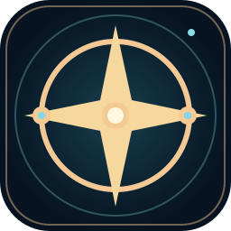
Public sites open directly. Previews are explicitly marked. Owner-only projects, including Mirror B, Resonance Atlas and Threads Observatory, are described without linking to restricted applications. Dates record known source edits or release checks, not invented ongoing activity.
Open The Constellation's full dated directoryShowing all 36 projects
An evidence-conscious compound atlas, source-linked studies, research discovery, chemical relationships, and a public Observatory. The current version is live on Railway.

A public reading room for original poetry, revisions, recovered pieces, themes, and reading paths. The current site lists 303 works.

A public restoration of the early Internet poetry community, its message board, original contexts, recovered texts, and media.

A guided bridge connecting original IDunnoPoetry, its modern museum, RhymeMosaic, and the language archives.

A public home for selected coined words, roots, provenance, meaning, and documented evolution. New private word seeds are not automatically published.

A browser-local workspace for preserving the thread of an intention, retaining sources, and handing selected project context between tools.

An interactive public writing laboratory based on fictional example fragments. Personal working drafts stay in the visitor's browser.

An intentionally narrow public portfolio of methods, milestones, evidence discipline, and selected work. It is not a window into private life administration.

Local and remote technology help, websites, device troubleshooting, and one-to-one tutoring for people and small businesses.

A separate, read-only historical archive and redesigned interface showing 192 works; not a replacement for the current RhymeMosaic publication.
A public-audience Lovable project reconstructing early IDunnoPoetry forum history. Its standalone publication address has not been independently established.
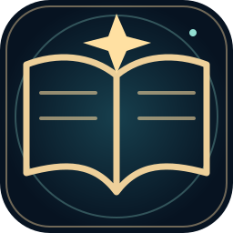
Continual lexical invention and provenance work. The Observatory publishes a selected, reviewed portion; drafts and recent proposed terms are not automatically released.
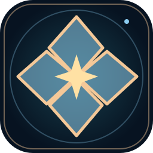
A curated poetry manuscript in proofing and editorial reconciliation. No new retail edition is claimed.
A second poetry manuscript undergoing publication proofing, text fidelity and version verification.
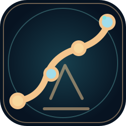
Tools to compare recovered poetry witnesses, detect duplicates and truncation, and preserve editorial decisions without silent normalization.
Owner-side editorial and publishing workflows for selected canonical poetry, drafts and revisions. Not a public editing account.
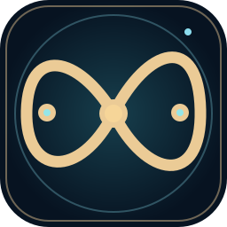
Experiments in portable capture, source indexing, search, and retrieval. Private data and device prototypes are not exposed.
Browser and Android-oriented experiments to reduce accidental actions and make consent deliberate. No native public release is claimed.
Local assistant and OpenClaw integration experiments exploring a portable, user-controlled software collaborator.
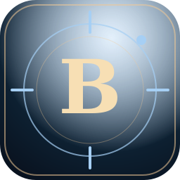
Owner-only conversational, writing and archival assistant. Its personal source collection, correspondence, and identity-specific material are not public.
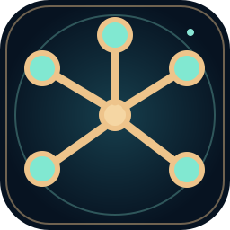
A tested Render/Atlas migration proposal. The Railway production service remains the published site; no alternative paid hosting is presented as active.
A local, reversible experiment for documenting overlooked options and re-checking assumptions without pretending to predict outcomes.
A catalog and discovery interface for a privately maintained reading library. The underlying collection is not publicly exposed.
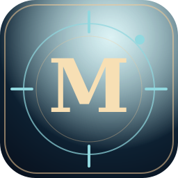
A separate writing-style and conversation studio concept using visitor-local inputs. Its historical public concept is not currently confirmed publicly accessible.
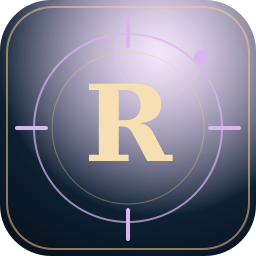
A private map for investigating coincidences and reported patterns, with a consent-based community concept; no personal event records are published.
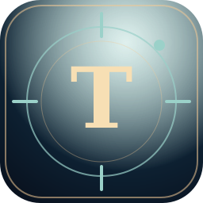
A private studio for reviewing Threads activity, themes, language experiments and proposed definition posts. Archive and analytics data stay private.
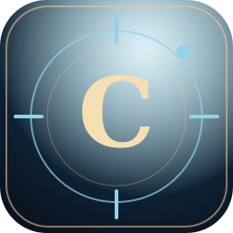
An owner-only hosted continuity experiment, distinct from the public Artificial Continuity GitHub Pages demonstration.
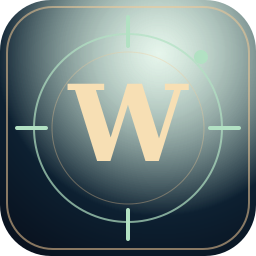
An unpublished word and language archive prototype. The reviewed public Lexical Observatory remains its separate reader-facing destination.
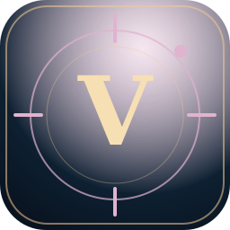
An owner-only conversational archival experiment. Historical private correspondence and personal source material are not public.
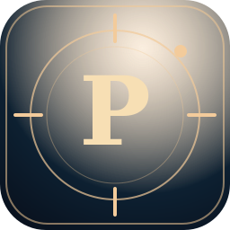
An unpublished social-content publishing prototype; no publicly available posting service is claimed.
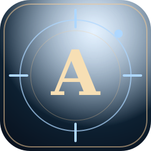
An unpublished analytics prototype for social-writing performance and content patterns; account-level data remains private.
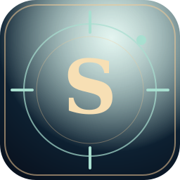
An unpublished research-tool prototype separate from the publicly running HYDRA//INDEX reference.
Earlier reciprocal-help and mutual-aid interface concepts, preserved as research rather than advertised as a live service.
A historical social-publishing and content-planning prototype; no functioning public production service has been verified.
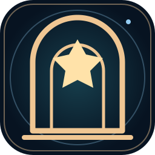
The historical precursor to the museum, with surviving WordPress material and Internet Archive snapshots.
Historical catalog records for past poetry editions; the planned new diptych is a separate, unfinished publishing project.
Project existence and project accessibility are not the same. Private archives and their contents remain unpublished, and no reader account is required or offered here.
The rule that holds it together
A poem in a 2004 snapshot is a historical witness. A 2026 layout is a reconstruction. A curated reading path is interpretation. RhymeMosaic is living literary work. Each deserves to be recognized on its own terms.
Recovered historical bytes, with provenance retained.
New display or function built from identified evidence.
Clearly marked interpretive navigation, not a historical claim.
Separately published writing and evolving creative projects.